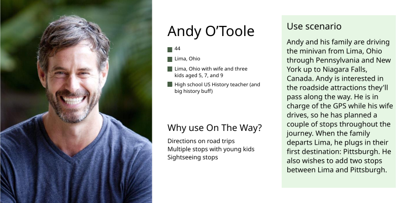
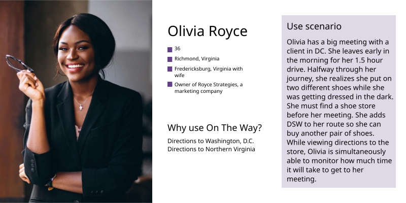
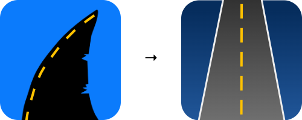
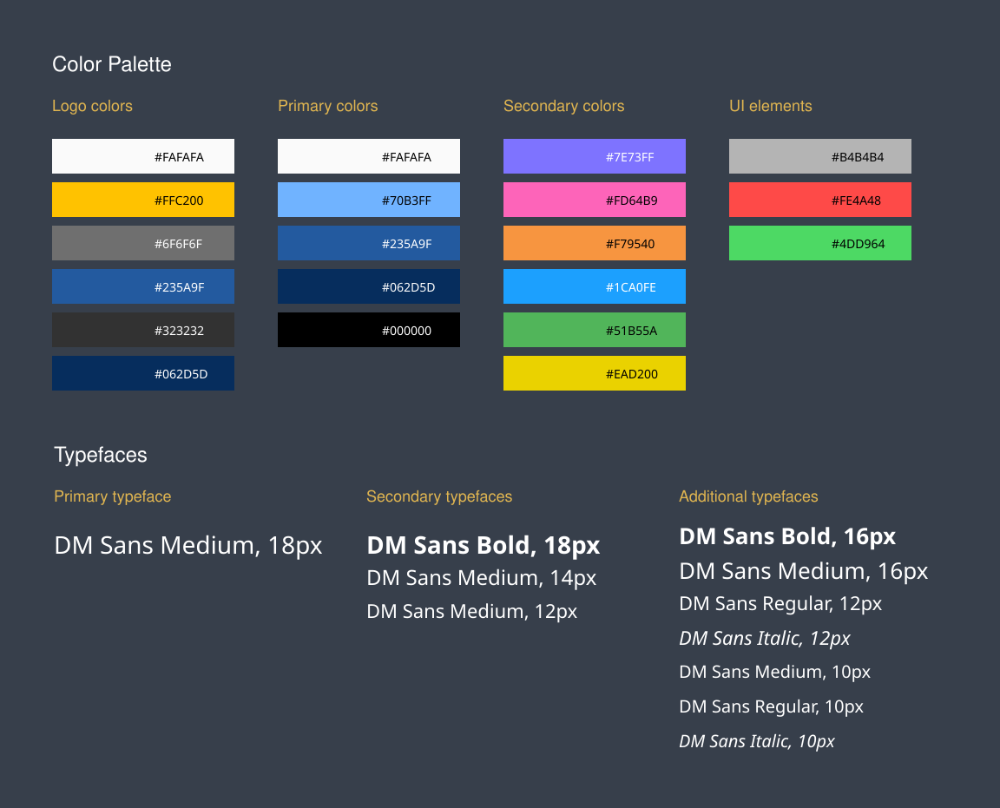

route-aware recommendations for smarter pitstops
discover what lies ahead
On The Way is a wayfinding product I designed and built in an end-to-end process involving research, requirements gathering, interaction and brand design, and building an Angular prototype that incorporates the Google Maps API. The core concept is simple: Help drivers get from point A to point B, and enable the addition of up to three stops without straying from the original route. On The Way enables clear decision-making and provides detour navigation that keeps the main trip intact.
The idea was born from a real pain point. On a trip to the beach, my family used one phone for directions to our hotel, and a different phone to find stops like gas, convenience stores, and dessert shops. Various GPS apps recommended places behind us, which meant turning around and adding time to our journey. I framed this experience as a design problem: Recommend only upcoming stops, and keep every stop close to the primary route. When my supervisor later tasked me to build a maps-based Angular app, I knew it was the perfect time to bring this idea to fruition.
final design
The final experience focuses on one core principle: Discover what lies ahead without sacrificing the trip you already started. Drivers can add up to three stops to their route, and remove stops, without killing their main navigation. I designed the UI around the context of driving, so as not to pull people’s attention from the road for too long. The current build is a functional prototype and differs slightly from the original design due to limitations with the Google Maps API.
user research
I started with a competitive analysis of Apple Maps, Google Maps, and Waze to find where market-leading GPS products were lacking. Apple Maps and Waze only allow one added stop. Apple Maps blocks address search when adding a stop, limiting people to categories like cafes, gas, and banks. Across all three apps, “end navigation” ends the entire trip instead of removing only detours. Those observations made it clear why adding an extra stop still forces users into workarounds like opening a second phone to get a separate set of directions.
To define potential users, I wrote contextual use scenarios and built three personas: a student heading to campus, a father on a family road trip, and a professional driving to a meeting. These scenarios revealed shared needs, which I synthesized into a set of requirements: multiple stops, flexible search, route-aware recommendations, and a way to end navigation without ambiguity.



ideation and conceptual design
I created the primary task flow using the Erin Wyman persona. The scenario routes her from NC to her new house in Blacksburg, VA, saves the Blacksburg address to her favorite places, adds a stop at a Shaky’s along the route, and adds a stop for gas. This flow met all of my requirements, which made identifying design gaps simple.
In parallel, I created a design system and logo for a consistent, coherent UI. I explored using shark symbology because sharks cannot swim backwards, a fun fact that emphasizes the app theme of discovering what lies ahead, but I cut that idea to hone in on the design - a clever idea is worthless if the product doesn’t serve the user.


reflection
On The Way was my first time owning a product across research, design, and implementation. It was also my first time creating a style guide, building an Angular application, and integrating the Google Maps API. I turned a messy, real-world frustration into a problem statement, justified requirements via competitive analysis and use case scenarios, prototyped a critical user flow, and adapted the design when engineering constraints revealed themselves. This product taught me to treat every constraint as a reason to redesign, not a reason to tweak requirements.